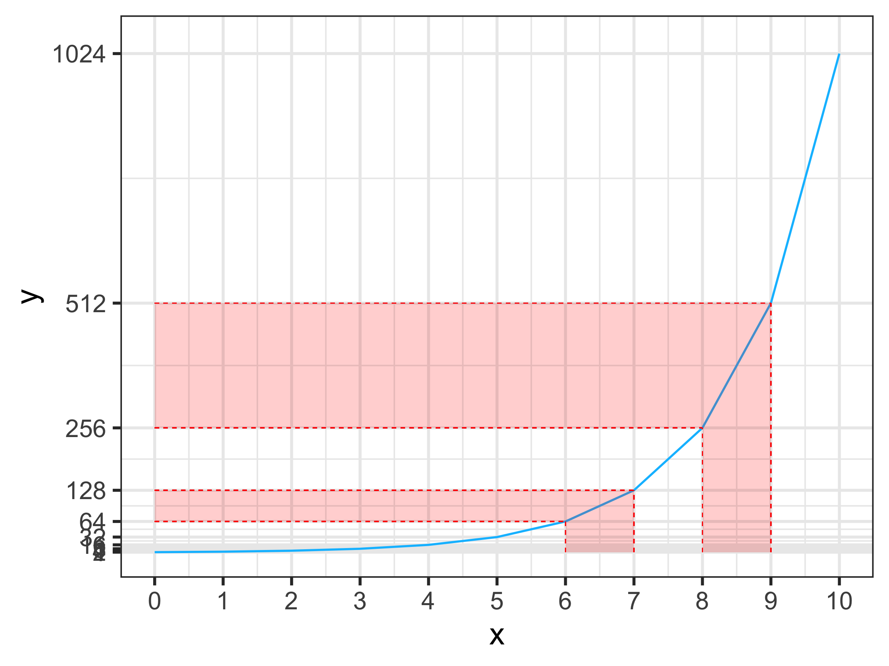
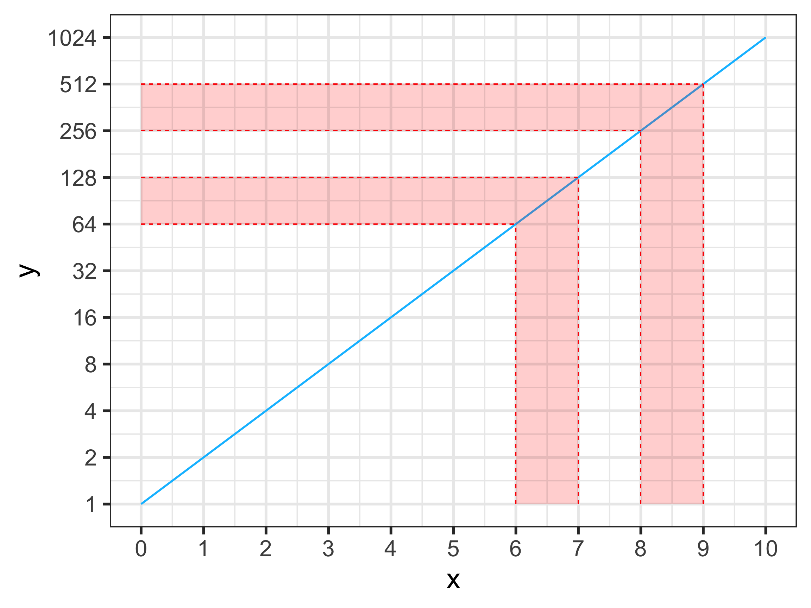
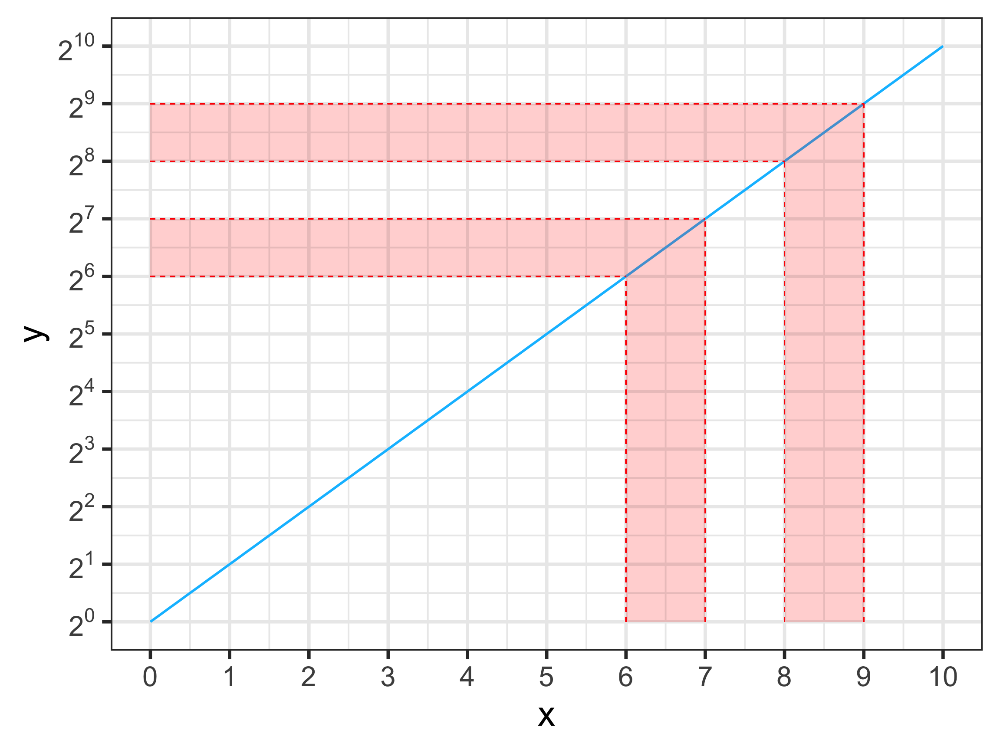
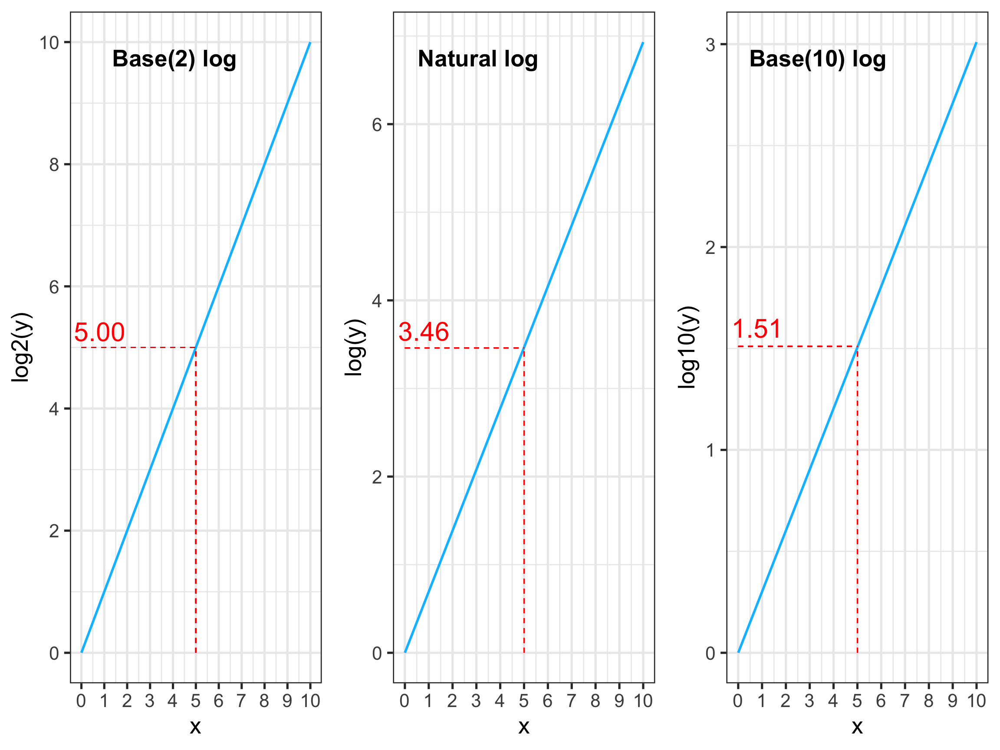

Having to deal with logarithms may send a shiver down your spine, but they’re not as hard as you may think
Published
July 26, 2024
1 Logarithms in the Real World
What do the acidity (pH - power of Hydrogen), sound intensity (dB - decibels) and earthquake intensity (measured on the Richter) scales all have in common?
They are all reported on a log scale.
In our real-world experience with these scales, I would be willing to bet that you haven’t put a lot of thought into what the numbers actually mean. Sure, we might remember from high school chemistry that something is more acidic if the pH is lower than 7. We might also know that higher numbers on the decibel scale indicate louder noises, but probably not what sources of sound specific levels relate to. We might also know from it’s reporting in the news that the most recent (thankfully infrequently occurring) earthquake wasn’t that severe based on a Richter magnitude of 4. But there’s actually much more to those numbers than meets the eye.
Let’s take a look at each of these scales in a little more detail:
If you take some time to look at those figures you will realise that there is a commonality among all three of them. In each case, two sets of number scales are presented:
Reporting scale
Acidity (0 - 14)
Sound Intensity (0 - 150)
Earthquake Intensity (0 - 9)
Measurement scale
Acidity (\(10^0 - 10^{-14}\))
Sound Intensity (\(10^{-12} - 10^{3}\))
Earthquake Intensity (\(10^{-1} - 10^{9}\))
The reporting scale is the one that we’re all familiar with, but in each case the actual measurements are recorded on a different scale behind the scenes.
Why?
The reason is that there is just too much variation on the measurement scale - by orders of magnitude - to make it convenient to also use to describe effects. So we convert the measurement scale to a more interpretable (but somewhat arbitrary) scale for reporting.
Well hello, logarithms.
When a physical quantity varies over a very large range, it is often convenient to take its logarithm in order to have a more manageable set of numbers (good primers on logarithms and exponents can be found here and here). And that’s exactly what is happening when we talk about acidity, sound intensity and earthquake intensity.
There is a key point to know about logarithms:
Logarithms convert numbers that are related on a multiplicative (exponential) scale to numbers that are related on an additive (linear) scale.
You will see that in each of the above cases, the natural scale that the quantity is measured on is multiplicative in nature. Each ‘unit’ change represents an order of magnitude difference in the quantity. For example, the amplitude of seismic waves (felt as the level of ground shake) in a Richter magnitude 5 earthquake (moderate) are 10 times greater than that of a magnitude 4 earthquake (small). Similarly, a ‘major’ earthquake (Richter 7) would be considered 1000 times greater in seismic activity compared to a small earthquake.
But when we instead use logarithms, those multiplicative effects are now converted to additive effects. Each one-unit increase in seismic activity on the Richter scale corresponds to a 10 times greater increase in seismic activity on the natural scale.
So, how is this relevant in our daily data analysis endeavours?
2 Logarithms in Biostatistics
Ok, so I don’t have the space, time or your attention to go into every possible use of logarithms in biostatistics. But want I want to do here is just give you some basic intuition about how important they can be in what we do, how not to be put off when you’re required to entertain them, and how you may be using them without even realising it.
2.1 Simulate Exponential Data
Let’s first of all visualise my statement regarding the logarithms ability to convert multiplicative effects to additive effects. I’ll create a ‘geometric’ number series of 10 numbers with base2 - i.e. each subsequent number in the series is double the previous number. In other words, 2 is the multiplying factor in this series. The data looks like:
You can see that the numbers grow large very quickly.
2.2 Arithmetic vs Geometric Mean
If someone asked you to provide a summary statistic for these data what would you give them? The mean, median or something else? The median is always a good choice when you’re uncertain about whether your data might conform to parametric distribution assumptions. The median is just the middle value in the series and can be worked out in R as:
median(df$y)
[1] 32
What about the (arithmetic) mean?
mean(df$y)
[1] 186.0909
That seems fairly highly when we see that most values are less than this. But this is symptomatic of data that are related in a multiplicative way - values tend to be condensed towards one end of the scale and skewed towards the other. The fewer, larger values ‘drag’ the average towards that end of the scale. In these cases, the conventional arithmetic mean is not the best measure of central tendency and instead we should use the geometric mean.
Remember that the arithmetic mean is calculated as such:
\[\frac{1+2+4+8+16+32+64+128+256+512+1024}{11} = 186.1\] There are two ways to calculate the geometric mean by hand (but I will also show you how to do it in R as well):
The first way is to take the nth root of the product of all the terms:
\[\sqrt[11]{1*2*4*8*16*32*64*128*256*512*1024} = 32\] and the second way is to take the exponent of the mean of the logged values:
# logs method - quick and easyexp(mean(log(df$y)))
[1] 32
In a perfectly geometric series the geometric mean will align with the median and is a better measure of central tendency, so keep that in the back of your mind.
2.3 Plot Data on Original Scale
Let’s now plot this data using a normal linear scale:
It is not hard to appreciate the exponential nature of the relationship between X and Y in this plot. As X increases, Y increases at a much faster rate, but it’s hard to tell by how much.
2.4 Plot Data on Original Scale (Modified Y Axis)
What does the plot look like if we use the axis tick marks to indicate the actual Y values (keeping the original scale):
Code
ggplot(df, aes(x, y)) +geom_line(linewidth =1, colour ="deepskyblue") +scale_x_continuous(limits =c(0, 10), breaks =seq(0, 10, by =1)) +scale_y_continuous(limits =c(1, 1050), breaks =c(1,2,4,8,16,32,64,128,256,512,1024)) +geom_segment(aes(x =0, y =64, xend =6, yend =64), linewidth =0.5, color ="red", linetype ="dashed") +geom_segment(aes(x =6, y =1, xend =6, yend =64), linewidth =0.5, color ="red", linetype ="dashed") +geom_segment(aes(x =0, y =128, xend =7, yend =128), linewidth =0.5, color ="red", linetype ="dashed") +geom_segment(aes(x =7, y =1, xend =7, yend =128), linewidth =0.5, color ="red", linetype ="dashed") +geom_rect(aes(xmin =0, xmax =7, ymin =64, ymax =128), fill ="red", alpha =0.02) +geom_rect(aes(xmin =6, xmax =7, ymin =1, ymax =64), fill ="red", alpha =0.02) +geom_segment(aes(x =0, y =256, xend =8, yend =256), linewidth =0.5, color ="red", linetype ="dashed") +geom_segment(aes(x =8, y =1, xend =8, yend =256), linewidth =0.5, color ="red", linetype ="dashed") +geom_segment(aes(x =0, y =512, xend =9, yend =512), linewidth =0.5, color ="red", linetype ="dashed") +geom_segment(aes(x =9, y =1, xend =9, yend =512), linewidth =0.5, color ="red", linetype ="dashed") +geom_rect(aes(xmin =0, xmax =9, ymin =256, ymax =512), fill ="red", alpha =0.02) +geom_rect(aes(xmin =8, xmax =9, ymin =1, ymax =256), fill ="red", alpha =0.02) +theme_bw(base_size =30)

Interesting. Obviously nothing has changed except the values on the Y axis no longer reflect evenly spaced units. In fact if you took a ruler to your screen you would see that the pixel distance between each pair of ascending tick marks is double the previous pair of tick marks. The larger numbers are nicely spread out on the axis, while the smaller numbers are all cramped together.
What is certainly easier to appreciate in this plot compared to the previous one is the doubling of Y for each unit increase in X. We can see for instance that the one-unit increase in X between 6 and 7 corresponds to a doubling of Y from 64 to 128. Similarly, the one-unit increase between 8 and 9 corresponds to a doubling of Y from 256 to 512.
So, being good data analysts we always visualise our data before we get too far into analysing it. Although we know the data-generating mechanism for these data (because we simulated it based on what we wanted), we usually don’t know the data-generating mechanism for most real-world data that we come across. So, if we were in fact naive to the origins of these data an entirely reasonable question we might ask ourselves would be “do these come from an exponential (multiplicative) distribution?”
A natural next step would be to see if taking logs of the data linearises (i.e straightens) the association between X and Y. Remember that I mentioned earlier that logs convert numbers that are related on a multiplicative scale to numbers that are related on an additive scale. What this means in practice is that an exponential curve flattens out and becomes linear if the data are truly multiplicative in nature.
2.5 Plot Data on Log Scale
There are two ways one can plot data on a log scale using ggplot() in R. The first is to log-transform the data and plot it in the normal way; the second is to leave the data as is and use ggplot() in concert with the scales package to log-transform the axis scales. Let’s consider the second option first.
Here we specify trans = "log2" within the scale_y_continuous() function to transform the Y axis to a base(2) log scale. The result is:
Code
library(scales)ggplot(df, aes(x, y)) +geom_line(linewidth =1, colour ="deepskyblue") +scale_x_continuous(limits =c(0, 10), breaks =seq(0, 10, by =1)) +scale_y_continuous(trans ="log2", breaks =c(1,2,4,8,16,32,64,128,256,512,1024)) +geom_segment(aes(x =0, y =64, xend =6, yend =64), linewidth =0.5, color ="red", linetype ="dashed") +geom_segment(aes(x =6, y =1, xend =6, yend =64), linewidth =0.5, color ="red", linetype ="dashed") +geom_segment(aes(x =0, y =128, xend =7, yend =128), linewidth =0.5, color ="red", linetype ="dashed") +geom_segment(aes(x =7, y =1, xend =7, yend =128), linewidth =0.5, color ="red", linetype ="dashed") +geom_rect(aes(xmin =0, xmax =7, ymin =64, ymax =128), fill ="red", alpha =0.02) +geom_rect(aes(xmin =6, xmax =7, ymin =1, ymax =64), fill ="red", alpha =0.02) +geom_segment(aes(x =0, y =256, xend =8, yend =256), linewidth =0.5, color ="red", linetype ="dashed") +geom_segment(aes(x =8, y =1, xend =8, yend =256), linewidth =0.5, color ="red", linetype ="dashed") +geom_segment(aes(x =0, y =512, xend =9, yend =512), linewidth =0.5, color ="red", linetype ="dashed") +geom_segment(aes(x =9, y =1, xend =9, yend =512), linewidth =0.5, color ="red", linetype ="dashed") +geom_rect(aes(xmin =0, xmax =9, ymin =256, ymax =512), fill ="red", alpha =0.02) +geom_rect(aes(xmin =8, xmax =9, ymin =1, ymax =256), fill ="red", alpha =0.02) +theme_bw(base_size =30)

Now that the Y axis has been rescaled we can easily see that the association between X and Y is in fact linear on this scale. We can also see that where previously the spacing of the ascending tick marks on the Y axis doubled, these now remain the same. Y is still doubling for every unit increase in X, but the Y scale is now considered additive rather than multiplicative in nature (i.e. each doubling is the now the same pixel distance along the axis in the plot).
I can hopefully consolidate this multiplicative -> additive transformation in your mind by now replacing the raw values on the Y axis with their log-transformed equivalents. If you ignore the base(2) on the ascending Y axis, each exponent is now simply 1 more than the previous value. In other words, on the base(2) log scale, the ‘effects’ are additive.
Code
ggplot(df, aes(x, y)) +geom_line(linewidth =1, colour ="deepskyblue") +scale_x_continuous(limits =c(0, 10), breaks =seq(0, 10, by =1)) +scale_y_continuous(trans =log2_trans(),breaks =c(1,2,4,8,16,32,64,128,256,512,1024),labels =trans_format("log2", math_format(2^.x))) +geom_segment(aes(x =0, y =64, xend =6, yend =64), linewidth =0.5, color ="red", linetype ="dashed") +geom_segment(aes(x =6, y =1, xend =6, yend =64), linewidth =0.5, color ="red", linetype ="dashed") +geom_segment(aes(x =0, y =128, xend =7, yend =128), linewidth =0.5, color ="red", linetype ="dashed") +geom_segment(aes(x =7, y =1, xend =7, yend =128), linewidth =0.5, color ="red", linetype ="dashed") +geom_rect(aes(xmin =0, xmax =7, ymin =64, ymax =128), fill ="red", alpha =0.02) +geom_rect(aes(xmin =6, xmax =7, ymin =1, ymax =64), fill ="red", alpha =0.02) +geom_segment(aes(x =0, y =256, xend =8, yend =256), linewidth =0.5, color ="red", linetype ="dashed") +geom_segment(aes(x =8, y =1, xend =8, yend =256), linewidth =0.5, color ="red", linetype ="dashed") +geom_segment(aes(x =0, y =512, xend =9, yend =512), linewidth =0.5, color ="red", linetype ="dashed") +geom_segment(aes(x =9, y =1, xend =9, yend =512), linewidth =0.5, color ="red", linetype ="dashed") +geom_rect(aes(xmin =0, xmax =9, ymin =256, ymax =512), fill ="red", alpha =0.02) +geom_rect(aes(xmin =8, xmax =9, ymin =1, ymax =256), fill ="red", alpha =0.02) +theme_bw(base_size =30)

The other approach to plotting data on a log scale is to actually log-transform the data, and this is not difficult. If you knew that the data series were multiplicative by a factor of 2 you would naturally transform using a base(2) log scale as you would end up with a nice, natural interpretation of the transformed data - each unit increase in X representing a doubling in Y. Often you won’t know this, but you can still achieve the goal of linearising your data by using either natural (e) or base(10) logs.
The plots below show the association between X and log-transformed Y for all three of the common log transformations. Note that they all produce the same effect on the association between X and Y - just the scale differs. The numbers on each Y axis represent the powers that are raised to each base to calculate the value of Y in its original units. So, for example:
# Here I have performed the log-transformation of Y on-the-fly, within the ggplot call, but you can also do this by explicitly creating a new log-transformed variable in the datasetp1 <-ggplot(df, aes(x, y =log2(y))) +geom_line(linewidth =1, colour ="deepskyblue") +geom_segment(aes(x =5, y =0, xend =5, yend =5), linewidth =0.5, color ="red", linetype ="dashed") +geom_segment(aes(x =0, y =5, xend =5, yend =5), linewidth =0.5, color ="red", linetype ="dashed") +scale_x_continuous(limits =c(0, 10), breaks =seq(0, 10, by =1)) +scale_y_continuous(limits =c(0, 10), breaks =c(0,2,4,6,8,10)) +annotate(geom ="text", x =0.8, y =5.26, label ="5.00", color="red", size =8) +theme_bw(base_size =20)p2 <-ggplot(df, aes(x, y =log(y))) +geom_line(linewidth =1, colour ="deepskyblue") +geom_segment(aes(x =5, y =0, xend =5, yend =3.46), linewidth =0.5, color ="red", linetype ="dashed") +geom_segment(aes(x =0, y =3.46, xend =5, yend =3.46), linewidth =0.5, color ="red", linetype ="dashed") +scale_x_continuous(limits =c(0, 10), breaks =seq(0, 10, by =1)) +annotate(geom ="text", x =0.8, y =3.65, label ="3.46", color="red", size =8) +theme_bw(base_size =20)p3 <-ggplot(df, aes(x, y =log10(y))) +geom_line(linewidth =1, colour ="deepskyblue") +geom_segment(aes(x =5, y =0, xend =5, yend =1.51), linewidth =0.5, color ="red", linetype ="dashed") +geom_segment(aes(x =0, y =1.51, xend =5, yend =1.51), linewidth =0.5, color ="red", linetype ="dashed") +scale_x_continuous(limits =c(0, 10), breaks =seq(0, 10, by =1)) +annotate(geom ="text", x =0.8, y =1.6, label ="1.51", color="red", size =8) +theme_bw(base_size =20)cowplot::plot_grid(p1, p2, p3, labels =c('Base(2) log', 'Natural log', 'Base(10) log'), hjust =c(-0.9,-0.7,-0.6), vjust =4, ncol =3, label_size =20)

So you might still be wondering where I am headed with all of this.
2.6 Think About Modelling Assumptions
Well, there are several assumptions that the linear model leans on to ensure the parameter estimates it comes up with are valid and these include that the association between a continuous predictor and the outcome is roughly linear and the distribution of the model residuals is roughly normal. Both of these assumptions can fail when you try to model an obviously curved relationship as if it were linear. Certainly if domain-knowledge dictates that the origins of your data come from an exponential distribution (many biological cell process have this basis - e.g. cell division), you need to stop and think about how you will approach your analysis.
If you blindly ran a standard linear regression on these data, you would get:
Code
mod_linear <-lm(y ~ x, data = df) mod_linear |>tbl_regression()
Clearly this is not ideal. The model is trying to suggest that for each unit increase in X, Y increases at a constant rate of 75. Let’s see what the model predicts for the value of Y when X = 5 (when we know the actual value is 32).
Hmmm, further evidence that this is a bad model for these data. Instead, let’s rerun the regression applying one small change - we will log-transform Y on-the-fly within the model call.
Code
mod_trans <-lm(log(y) ~ x, data = df) tbl <- mod_trans |>tbl_regression() # need work around for log transformed response for tbl_regressiontbl |># remove character version of 95% CImodify_column_hide(ci) |># exponentiate the regression estimatesmodify_table_body( \(x) x |>mutate(across(c(estimate, conf.low, conf.high), exp)) ) |># merge numeric LB and UB together to display in tablemodify_column_merge(pattern ="{conf.low}, {conf.high}", rows =!is.na(estimate)) |>modify_header(conf.low ="**95% CI**") |>as_kable()
Characteristic
Beta
95% CI
p-value
x
2.0
2.0, 2.0
<0.001
You will get a warning if you run this model (I have hidden it) as it’s a perfect fit, because there is no randomness in the data. That doesn’t really matter though for the sake of the illustration. The Beta value represents the exponentiated coefficient for the association between X and Y and can be considered a ‘response ratio’. This is equivalent to the ratio of each pair of successive values of Y for each unit increase in X. The response ratio of 2 implies that the outcome doubles (or increases by 100%) for each unit increase in the predictor and we know this to be true.
What does this model predict the value of Y at X = 5 should be?
Code
emmeans(mod_trans, ~ x, at = (list(x =5)), type ="response") |>kable(align ="c", digits =2)
x
response
SE
df
lower.CL
upper.CL
5
32
0
9
32
32
And this is what we would expect a good-fitting (perfectly-fitting in this case) model to be able to do - predict values on new data in line with our empirical observations.
3 Summary
Ok, this post has become much longer than I was initially anticipating - there appears to be more to logs to talk about than I thought. The example just above illustrates the idea of log-tranforming your outcome variable to improve the model fit and assumptions, but logarithms appear in all sorts of statistical models that you might not even be aware of. For example, they are frequently applied as link functions in generalised linear models think the logit (log-odds) link function in logistic regression and the log-count link function in Poisson regression. In each case they are used to transform the outcome from its original scale - a probability for the former and a positive count for the latter - to a scale that is unbounded and continuous so that standard model estimation methods can be used. Part of this is linearising the associations between the predictor/s and the outcome.
When you are dealing with logarithms in statistical models, you can rely on some general ‘rules’. Differences on (additive) log scales are generally equivalent to ratios on (multiplicative) original scales. For example, if you are performing a logistic regression, you might be presented with a model coefficient on the log-odds scale. This represents the difference in the log-odds of the outcome for a one-unit increase in the predictor. But the log-odds scale is really only used to estimate the model parameters - we usually talk in terms of odds and odds ratios when we’re discussing our results. So we exponentiate our log-odds coefficient to obtain an odds ratio instead.
I will stop there. Hopefully I haven’t confused you further in this discussion. Logs don’t have to be difficult and you mostly don’t have to deal directly with them - if it helps you can think of them as ‘facilitators’ - they help things run smoothly in the background. However, having a general sense that they assist in transforming multiplicative scales to additive scales can help you in your daily data analysis tasks.
Source Code
---title: "Logarithms and Why They're Important in Statistics"date: 2024-07-26categories: [code, concept, visualisation]#image: "R_small.jpeg"description: "Having to deal with logarithms may send a shiver down your spine, but they're not as hard as you may think"---# Logarithms in the Real WorldWhat do the acidity (pH - power of Hydrogen), sound intensity (dB - decibels) and earthquake intensity (measured on the Richter) scales all have in common?**They are all reported on a log scale.**In our real-world experience with these scales, I would be willing to bet that you haven't put a lot of thought into what the numbers actually mean. Sure, we might remember from high school chemistry that something is more acidic if the pH is lower than `7`. We might also know that higher numbers on the decibel scale indicate louder noises, but probably not what sources of sound specific levels relate to. We might also know from it's reporting in the news that the most recent (thankfully infrequently occurring) earthquake wasn't that severe based on a Richter magnitude of `4`. But there's actually much more to those numbers than meets the eye.Let's take a look at each of these scales in a little more detail:{width="400"}If you take some time to look at those figures you will realise that there is a commonality among all three of them. In each case, two sets of number scales are presented:1. Reporting scale - Acidity (0 - 14) - Sound Intensity (0 - 150) - Earthquake Intensity (0 - 9)2. Measurement scale - Acidity ($10^0 - 10^{-14}$) - Sound Intensity ($10^{-12} - 10^{3}$) - Earthquake Intensity ($10^{-1} - 10^{9}$)The reporting scale is the one that we're all familiar with, but in each case the actual measurements are recorded on a different scale behind the scenes.Why?The reason is that there is just too much variation on the measurement scale - by orders of magnitude - to make it convenient to also use to describe effects. So we convert the measurement scale to a more interpretable (but somewhat arbitrary) scale for reporting.Well hello, logarithms.When a physical quantity varies over a very large range, it is often convenient to take its logarithm in order to have a more manageable set of numbers (good primers on logarithms and exponents can be found [here](https://www.mathsisfun.com/algebra/logarithms.html) and [here](https://www.mathsisfun.com/algebra/exponents-logarithms.html)). And that's exactly what is happening when we talk about acidity, sound intensity and earthquake intensity.There is a key point to know about logarithms:**Logarithms convert numbers that are related on a multiplicative (exponential) scale to numbers that are related on an additive (linear) scale**.You will see that in each of the above cases, the natural scale that the quantity is measured on is multiplicative in nature. Each 'unit' change represents an order of magnitude difference in the quantity. For example, the amplitude of seismic waves (felt as the level of ground shake) in a Richter magnitude 5 earthquake (moderate) are 10 times greater than that of a magnitude 4 earthquake (small). Similarly, a 'major' earthquake (Richter 7) would be considered 1000 times greater in seismic activity compared to a small earthquake.But when we instead use logarithms, those multiplicative effects are now converted to additive effects. **Each one-unit increase in seismic activity on the Richter scale corresponds to a 10 times greater increase in seismic activity on the natural scale.**So, how is this relevant in our daily data analysis endeavours?# Logarithms in BiostatisticsOk, so I don't have the space, time or your attention to go into every possible use of logarithms in biostatistics. But want I want to do here is just give you some basic intuition about how important they can be in what we do, how not to be put off when you're required to entertain them, and how you may be using them without even realising it.## Simulate Exponential DataLet's first of all visualise my statement regarding the logarithms ability to convert multiplicative effects to additive effects. I'll create a 'geometric' number series of 10 numbers with **base** `2` - i.e. each subsequent number in the series is double the previous number. In other words, `2` is the multiplying factor in this series. The data looks like:```{r}#| message: falselibrary(tidyverse)library(kableExtra)library(gtsummary)library(emmeans)x <-c(0:10)y <-2^(0:10)y2 <-c(paste0("1 = 2\U2070"),paste0("2 = 2\U00B9"),paste0("2x2 = 2\U00B2"),paste0("2x2x2 = 2\U00B3"),paste0("2x2x2x2 = 2\U2074"),paste0("2x2x2x2x2 = 2\U2075"),paste0("2x2x2x2x2x2 = 2\U2076"),paste0("2x2x2x2x2x2x2 = 2\U2077"),paste0("2x2x2x2x2x2x2x2 = 2\U2078"),paste0("2x2x2x2x2x2x2x2x2 = 2\U2079"),paste0("2x2x2x2x2x2x2x2x2x2 = 2\U00B9\U2070"))df <-data.frame(cbind(x = x, y = y, `y_in_exponential_form`= y2))df$x <-as.numeric(df$x); df$y <-as.numeric(df$y)df |>kable(align ="c", digits =2)```You can see that the numbers grow large very quickly.## Arithmetic vs Geometric MeanIf someone asked you to provide a summary statistic for these data what would you give them? The mean, median or something else? The median is always a good choice when you're uncertain about whether your data might conform to parametric distribution assumptions. The median is just the middle value in the series and can be worked out in `R` as:```{r}#| code-fold: falsemedian(df$y)```What about the (arithmetic) mean?```{r}#| code-fold: falsemean(df$y)```That seems fairly highly when we see that most values are less than this. But this is symptomatic of data that are related in a multiplicative way - values tend to be condensed towards one end of the scale and skewed towards the other. The fewer, larger values 'drag' the average towards that end of the scale. In these cases, the conventional **arithmetic** mean is not the best measure of central tendency and instead we should use the **geometric** mean.Remember that the arithmetic mean is calculated as such:$$\frac{1+2+4+8+16+32+64+128+256+512+1024}{11} = 186.1$$ There are two ways to calculate the geometric mean by hand (but I will also show you how to do it in `R` as well):The first way is to take the `nth` root of the product of all the terms:$$\sqrt[11]{1*2*4*8*16*32*64*128*256*512*1024} = 32$$ and the second way is to take the exponent of the mean of the logged values:$$e\ ^{\left( \frac{log(1)+log(2)+log(4)+log(8)+log(16)+log(32)+log(64)+log(128)+log(256)+log(512)+log(1024)}{11} \right)} = 32$$In `R`:```{r}# nth root method - manual(1*2*4*8*16*32*64*128*256*512*1024)^(1/11)# logs method - manualexp((log(1)+log(2)+log(4)+log(8)+log(16)+log(32)+log(64)+log(128)+log(256)+log(512)+log(1024))/11)# logs method - quick and easyexp(mean(log(df$y)))```In a perfectly geometric series the geometric mean will align with the median and is a better measure of central tendency, so keep that in the back of your mind.## Plot Data on Original ScaleLet's now plot this data using a normal linear scale:```{r}ggplot(df, aes(x, y)) +geom_line(linewidth =1, colour ="deepskyblue") +scale_x_continuous(limits =c(0, 10), breaks =seq(0, 10, by =1)) +scale_y_continuous(limits =c(1, 1050), breaks =c(1,100,200,300,400,500,600,700,800,900,1000)) +theme_bw(base_size =30)```It is not hard to appreciate the exponential nature of the relationship between `X` and `Y` in this plot. As `X` increases, `Y` increases at a much faster rate, but it's hard to tell by how much.## Plot Data on Original Scale (Modified Y Axis)What does the plot look like if we use the axis tick marks to indicate the actual `Y` values (keeping the original scale):```{r}ggplot(df, aes(x, y)) +geom_line(linewidth =1, colour ="deepskyblue") +scale_x_continuous(limits =c(0, 10), breaks =seq(0, 10, by =1)) +scale_y_continuous(limits =c(1, 1050), breaks =c(1,2,4,8,16,32,64,128,256,512,1024)) +geom_segment(aes(x =0, y =64, xend =6, yend =64), linewidth =0.5, color ="red", linetype ="dashed") +geom_segment(aes(x =6, y =1, xend =6, yend =64), linewidth =0.5, color ="red", linetype ="dashed") +geom_segment(aes(x =0, y =128, xend =7, yend =128), linewidth =0.5, color ="red", linetype ="dashed") +geom_segment(aes(x =7, y =1, xend =7, yend =128), linewidth =0.5, color ="red", linetype ="dashed") +geom_rect(aes(xmin =0, xmax =7, ymin =64, ymax =128), fill ="red", alpha =0.02) +geom_rect(aes(xmin =6, xmax =7, ymin =1, ymax =64), fill ="red", alpha =0.02) +geom_segment(aes(x =0, y =256, xend =8, yend =256), linewidth =0.5, color ="red", linetype ="dashed") +geom_segment(aes(x =8, y =1, xend =8, yend =256), linewidth =0.5, color ="red", linetype ="dashed") +geom_segment(aes(x =0, y =512, xend =9, yend =512), linewidth =0.5, color ="red", linetype ="dashed") +geom_segment(aes(x =9, y =1, xend =9, yend =512), linewidth =0.5, color ="red", linetype ="dashed") +geom_rect(aes(xmin =0, xmax =9, ymin =256, ymax =512), fill ="red", alpha =0.02) +geom_rect(aes(xmin =8, xmax =9, ymin =1, ymax =256), fill ="red", alpha =0.02) +theme_bw(base_size =30)```Interesting. Obviously nothing has changed except the values on the `Y` axis no longer reflect evenly spaced units. In fact if you took a ruler to your screen you would see that the pixel distance between each pair of ascending tick marks is double the previous pair of tick marks. The larger numbers are nicely spread out on the axis, while the smaller numbers are all cramped together.What is certainly easier to appreciate in this plot compared to the previous one is the **doubling** of `Y` for each unit increase in `X`. We can see for instance that the one-unit increase in `X` between `6` and `7` corresponds to a doubling of `Y` from `64` to `128.` Similarly, the one-unit increase between `8` and `9` corresponds to a doubling of `Y` from `256` to `512`.So, being good data analysts we always visualise our data before we get too far into analysing it. Although we know the data-generating mechanism for these data (because we simulated it based on what we wanted), we usually don't know the data-generating mechanism for most real-world data that we come across. So, if we were in fact naive to the origins of these data an entirely reasonable question we might ask ourselves would be "do these come from an exponential (multiplicative) distribution?"A natural next step would be to see if taking logs of the data linearises (i.e straightens) the association between `X` and `Y`. Remember that I mentioned earlier that logs convert numbers that are related on a multiplicative scale to numbers that are related on an additive scale. What this means in practice is that an exponential curve flattens out and becomes linear if the data are truly multiplicative in nature.## Plot Data on Log ScaleThere are two ways one can plot data on a log scale using `ggplot()` in `R`. The first is to log-transform the data and plot it in the normal way; the second is to leave the data as is and use `ggplot()` in concert with the `scales` package to log-transform the axis scales. Let's consider the second option first.Here we specify `trans = "log2"` within the `scale_y_continuous()` function to transform the `Y` axis to a base(`2`) log scale. The result is:```{r}#| message: falselibrary(scales)ggplot(df, aes(x, y)) +geom_line(linewidth =1, colour ="deepskyblue") +scale_x_continuous(limits =c(0, 10), breaks =seq(0, 10, by =1)) +scale_y_continuous(trans ="log2", breaks =c(1,2,4,8,16,32,64,128,256,512,1024)) +geom_segment(aes(x =0, y =64, xend =6, yend =64), linewidth =0.5, color ="red", linetype ="dashed") +geom_segment(aes(x =6, y =1, xend =6, yend =64), linewidth =0.5, color ="red", linetype ="dashed") +geom_segment(aes(x =0, y =128, xend =7, yend =128), linewidth =0.5, color ="red", linetype ="dashed") +geom_segment(aes(x =7, y =1, xend =7, yend =128), linewidth =0.5, color ="red", linetype ="dashed") +geom_rect(aes(xmin =0, xmax =7, ymin =64, ymax =128), fill ="red", alpha =0.02) +geom_rect(aes(xmin =6, xmax =7, ymin =1, ymax =64), fill ="red", alpha =0.02) +geom_segment(aes(x =0, y =256, xend =8, yend =256), linewidth =0.5, color ="red", linetype ="dashed") +geom_segment(aes(x =8, y =1, xend =8, yend =256), linewidth =0.5, color ="red", linetype ="dashed") +geom_segment(aes(x =0, y =512, xend =9, yend =512), linewidth =0.5, color ="red", linetype ="dashed") +geom_segment(aes(x =9, y =1, xend =9, yend =512), linewidth =0.5, color ="red", linetype ="dashed") +geom_rect(aes(xmin =0, xmax =9, ymin =256, ymax =512), fill ="red", alpha =0.02) +geom_rect(aes(xmin =8, xmax =9, ymin =1, ymax =256), fill ="red", alpha =0.02) +theme_bw(base_size =30)```Now that the `Y` axis has been rescaled we can easily see that the association between `X` and `Y` is in fact linear on this scale. We can also see that where previously the spacing of the ascending tick marks on the `Y` axis doubled, these now remain the same. `Y` is still doubling for every unit increase in `X`, but the `Y` scale is now considered additive rather than multiplicative in nature (i.e. each doubling is the now the same pixel distance along the axis in the plot).I can hopefully consolidate this multiplicative -\> additive transformation in your mind by now replacing the raw values on the `Y` axis with their log-transformed equivalents. If you ignore the base(`2`) on the ascending `Y` axis, each exponent is now simply `1` more than the previous value. In other words, on the base(`2`) log scale, the 'effects' are additive.```{r}ggplot(df, aes(x, y)) +geom_line(linewidth =1, colour ="deepskyblue") +scale_x_continuous(limits =c(0, 10), breaks =seq(0, 10, by =1)) +scale_y_continuous(trans =log2_trans(),breaks =c(1,2,4,8,16,32,64,128,256,512,1024),labels =trans_format("log2", math_format(2^.x))) +geom_segment(aes(x =0, y =64, xend =6, yend =64), linewidth =0.5, color ="red", linetype ="dashed") +geom_segment(aes(x =6, y =1, xend =6, yend =64), linewidth =0.5, color ="red", linetype ="dashed") +geom_segment(aes(x =0, y =128, xend =7, yend =128), linewidth =0.5, color ="red", linetype ="dashed") +geom_segment(aes(x =7, y =1, xend =7, yend =128), linewidth =0.5, color ="red", linetype ="dashed") +geom_rect(aes(xmin =0, xmax =7, ymin =64, ymax =128), fill ="red", alpha =0.02) +geom_rect(aes(xmin =6, xmax =7, ymin =1, ymax =64), fill ="red", alpha =0.02) +geom_segment(aes(x =0, y =256, xend =8, yend =256), linewidth =0.5, color ="red", linetype ="dashed") +geom_segment(aes(x =8, y =1, xend =8, yend =256), linewidth =0.5, color ="red", linetype ="dashed") +geom_segment(aes(x =0, y =512, xend =9, yend =512), linewidth =0.5, color ="red", linetype ="dashed") +geom_segment(aes(x =9, y =1, xend =9, yend =512), linewidth =0.5, color ="red", linetype ="dashed") +geom_rect(aes(xmin =0, xmax =9, ymin =256, ymax =512), fill ="red", alpha =0.02) +geom_rect(aes(xmin =8, xmax =9, ymin =1, ymax =256), fill ="red", alpha =0.02) +theme_bw(base_size =30)```The other approach to plotting data on a log scale is to actually log-transform the data, and this is not difficult. If you knew that the data series were multiplicative by a factor of `2` you would naturally transform using a base(`2`) log scale as you would end up with a nice, natural interpretation of the transformed data - each unit increase in `X` representing a doubling in `Y`. Often you won't know this, but you can still achieve the goal of linearising your data by using either natural (`e`) or base(`10`) logs.The plots below show the association between `X` and log-transformed `Y` for all three of the common log transformations. Note that they all produce the same effect on the association between `X` and `Y` - just the scale differs. The numbers on each `Y` axis represent the powers that are raised to each base to calculate the value of `Y` in its original units. So, for example:$$2^{5} \approx e^{3.46} \approx 10^{1.51} \approx 32$$```{r}# Here I have performed the log-transformation of Y on-the-fly, within the ggplot call, but you can also do this by explicitly creating a new log-transformed variable in the datasetp1 <-ggplot(df, aes(x, y =log2(y))) +geom_line(linewidth =1, colour ="deepskyblue") +geom_segment(aes(x =5, y =0, xend =5, yend =5), linewidth =0.5, color ="red", linetype ="dashed") +geom_segment(aes(x =0, y =5, xend =5, yend =5), linewidth =0.5, color ="red", linetype ="dashed") +scale_x_continuous(limits =c(0, 10), breaks =seq(0, 10, by =1)) +scale_y_continuous(limits =c(0, 10), breaks =c(0,2,4,6,8,10)) +annotate(geom ="text", x =0.8, y =5.26, label ="5.00", color="red", size =8) +theme_bw(base_size =20)p2 <-ggplot(df, aes(x, y =log(y))) +geom_line(linewidth =1, colour ="deepskyblue") +geom_segment(aes(x =5, y =0, xend =5, yend =3.46), linewidth =0.5, color ="red", linetype ="dashed") +geom_segment(aes(x =0, y =3.46, xend =5, yend =3.46), linewidth =0.5, color ="red", linetype ="dashed") +scale_x_continuous(limits =c(0, 10), breaks =seq(0, 10, by =1)) +annotate(geom ="text", x =0.8, y =3.65, label ="3.46", color="red", size =8) +theme_bw(base_size =20)p3 <-ggplot(df, aes(x, y =log10(y))) +geom_line(linewidth =1, colour ="deepskyblue") +geom_segment(aes(x =5, y =0, xend =5, yend =1.51), linewidth =0.5, color ="red", linetype ="dashed") +geom_segment(aes(x =0, y =1.51, xend =5, yend =1.51), linewidth =0.5, color ="red", linetype ="dashed") +scale_x_continuous(limits =c(0, 10), breaks =seq(0, 10, by =1)) +annotate(geom ="text", x =0.8, y =1.6, label ="1.51", color="red", size =8) +theme_bw(base_size =20)cowplot::plot_grid(p1, p2, p3, labels =c('Base(2) log', 'Natural log', 'Base(10) log'), hjust =c(-0.9,-0.7,-0.6), vjust =4, ncol =3, label_size =20)```So you might still be wondering where I am headed with all of this.## Think About Modelling AssumptionsWell, there are several assumptions that the linear model leans on to ensure the parameter estimates it comes up with are valid and these include that the association between a continuous predictor and the outcome is roughly linear and the distribution of the model residuals is roughly normal. Both of these assumptions can fail when you try to model an obviously curved relationship as if it were linear. Certainly if domain-knowledge dictates that the origins of your data come from an exponential distribution (many biological cell process have this basis - e.g. cell division), you need to stop and think about how you will approach your analysis.If you blindly ran a standard linear regression on these data, you would get:```{r}#| warning: falsemod_linear <-lm(y ~ x, data = df) mod_linear |>tbl_regression()ggplot(df, aes(x, y)) +geom_line(linewidth =1, colour ="deepskyblue") +geom_smooth(method ="lm", se = F, colour ="black") +scale_x_continuous(limits =c(0, 10), breaks =seq(0, 10, by =1)) +scale_y_continuous(limits =c(1, 1050), breaks =c(1,100,200,300,400,500,600,700,800,900,1000)) +theme_bw(base_size =30)```Clearly this is not ideal. The model is trying to suggest that for each unit increase in `X`, `Y` increases at a constant rate of `75`. Let's see what the model predicts for the value of `Y` when `X = 5` (when we know the actual value is `32`).```{r}emmeans(mod_linear, ~ x, at = (list(x =5))) |>kable(align ="c", digits =2)```Hmmm, further evidence that this is a bad model for these data. Instead, let's rerun the regression applying one small change - we will log-transform `Y` on-the-fly within the model call.```{r}#| warning: falsemod_trans <-lm(log(y) ~ x, data = df) tbl <- mod_trans |>tbl_regression() # need work around for log transformed response for tbl_regressiontbl |># remove character version of 95% CImodify_column_hide(ci) |># exponentiate the regression estimatesmodify_table_body( \(x) x |>mutate(across(c(estimate, conf.low, conf.high), exp)) ) |># merge numeric LB and UB together to display in tablemodify_column_merge(pattern ="{conf.low}, {conf.high}", rows =!is.na(estimate)) |>modify_header(conf.low ="**95% CI**") |>as_kable()```You will get a warning if you run this model (I have hidden it) as it's a perfect fit, because there is no randomness in the data. That doesn't really matter though for the sake of the illustration. The `Beta` value represents the exponentiated coefficient for the association between `X` and `Y` and can be considered a 'response ratio'. This is equivalent to the **ratio of each pair of successive values of `Y` for each unit increase in `X`**. The response ratio of `2` implies that the outcome doubles (or increases by `100%`) for each unit increase in the predictor and we know this to be true.What does this model predict the value of `Y` at `X = 5` should be?```{r}#| warning: falseemmeans(mod_trans, ~ x, at = (list(x =5)), type ="response") |>kable(align ="c", digits =2)```And this is what we would expect a good-fitting (perfectly-fitting in this case) model to be able to do - predict values on new data in line with our empirical observations.# SummaryOk, this post has become much longer than I was initially anticipating - there appears to be more to logs to talk about than I thought. The example just above illustrates the idea of log-tranforming your outcome variable to improve the model fit and assumptions, but logarithms appear in all sorts of statistical models that you might not even be aware of. For example, they are frequently applied as **link functions in generalised linear models** think the logit (log-odds) link function in logistic regression and the log-count link function in Poisson regression. In each case they are used to transform the outcome from its original scale - a probability for the former and a positive count for the latter - to a scale that is unbounded and continuous so that standard model estimation methods can be used. Part of this is linearising the associations between the predictor/s and the outcome.When you are dealing with logarithms in statistical models, you can rely on some general 'rules'. **Differences on (additive) log scales are generally equivalent to ratios on (multiplicative) original scales**. For example, if you are performing a logistic regression, you might be presented with a model coefficient on the log-odds scale. This represents the **difference** in the log-odds of the outcome for a one-unit increase in the predictor. But the log-odds scale is really only used to estimate the model parameters - we usually talk in terms of odds and odds ratios when we're discussing our results. So we exponentiate our log-odds coefficient to obtain an odds **ratio** instead.I will stop there. Hopefully I haven't confused you further in this discussion. Logs don't have to be difficult and you mostly don't have to deal directly with them - if it helps you can think of them as 'facilitators' - they help things run smoothly in the background. However, having a general sense that they assist in transforming multiplicative scales to additive scales can help you in your daily data analysis tasks.